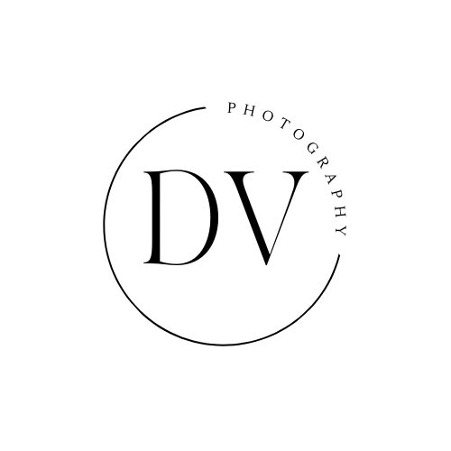
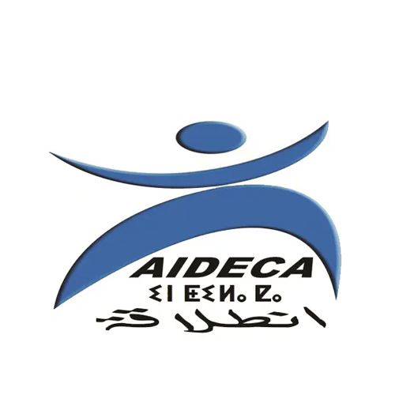
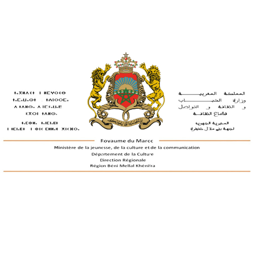

Organized by
-

Narration and Cultural Forms Laboratory
Beni Mellal, Morocco
-

DV Photo Association
Marseille, France
-

Al Intilaka Association
Afourer, Morocco
-

Regional Directorate of Culture
Beni Mellal, Morocco